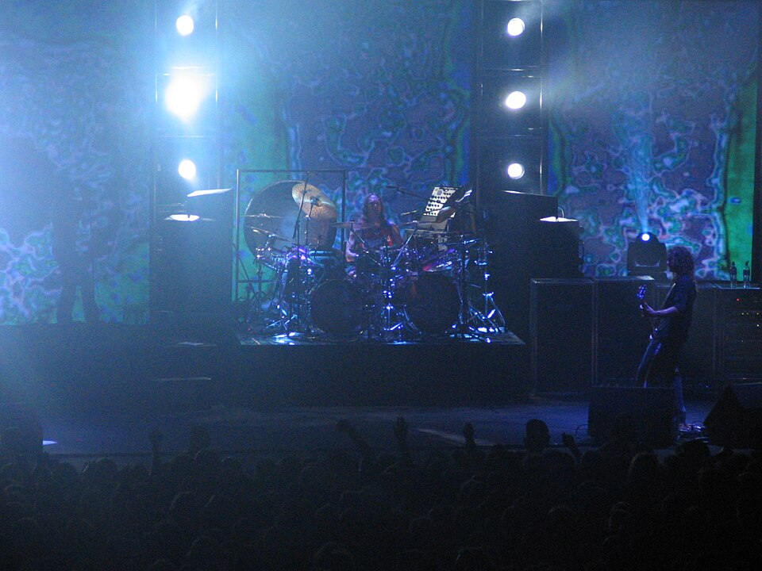
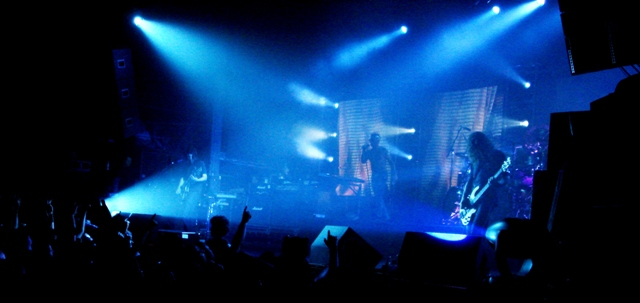
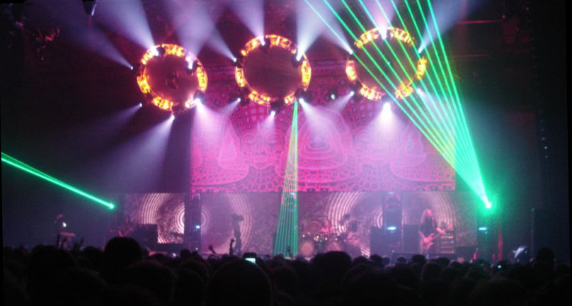
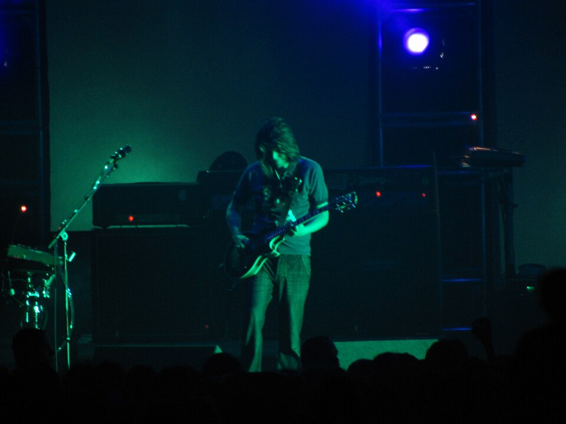
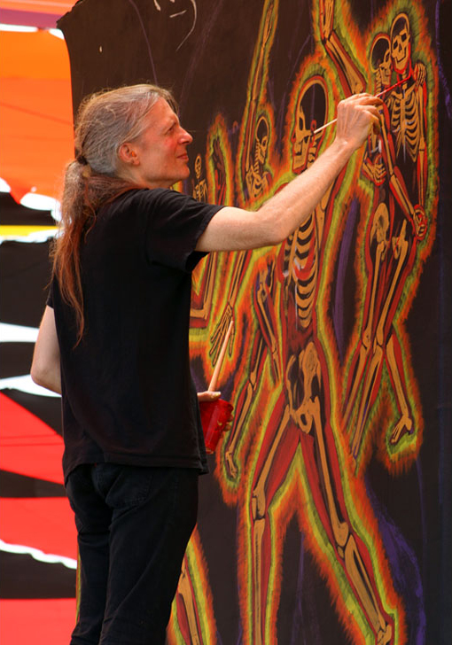
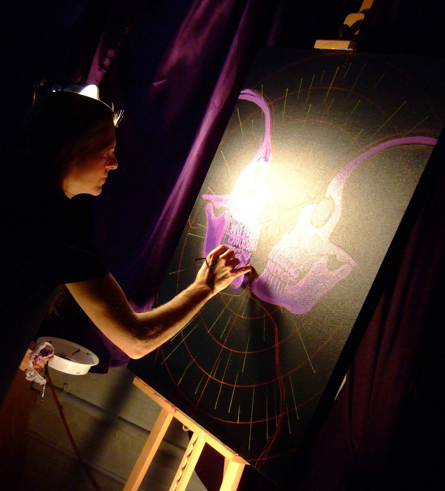
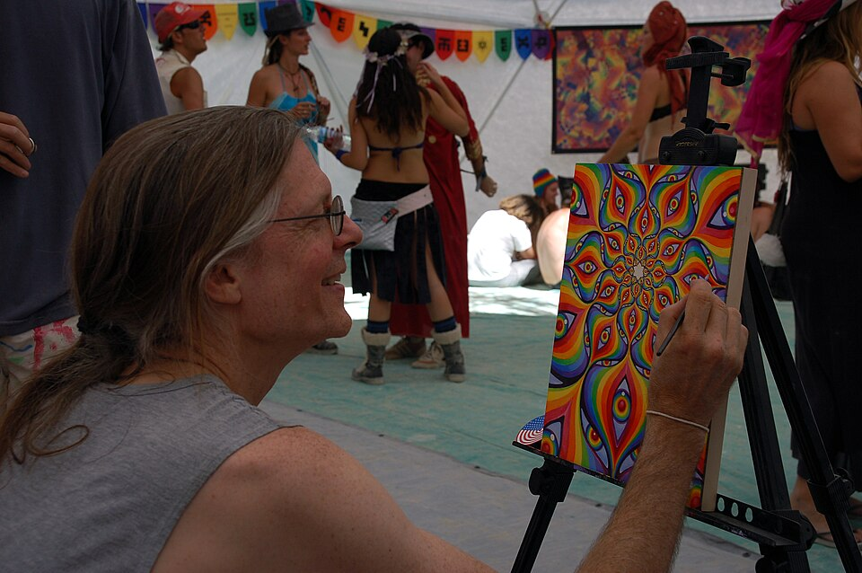
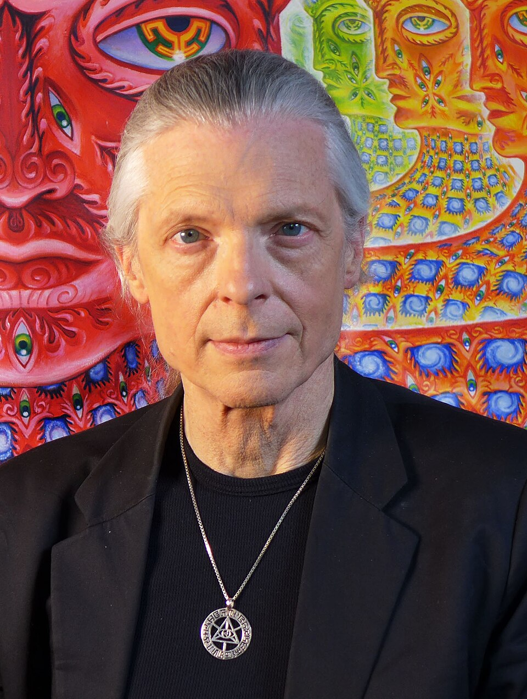
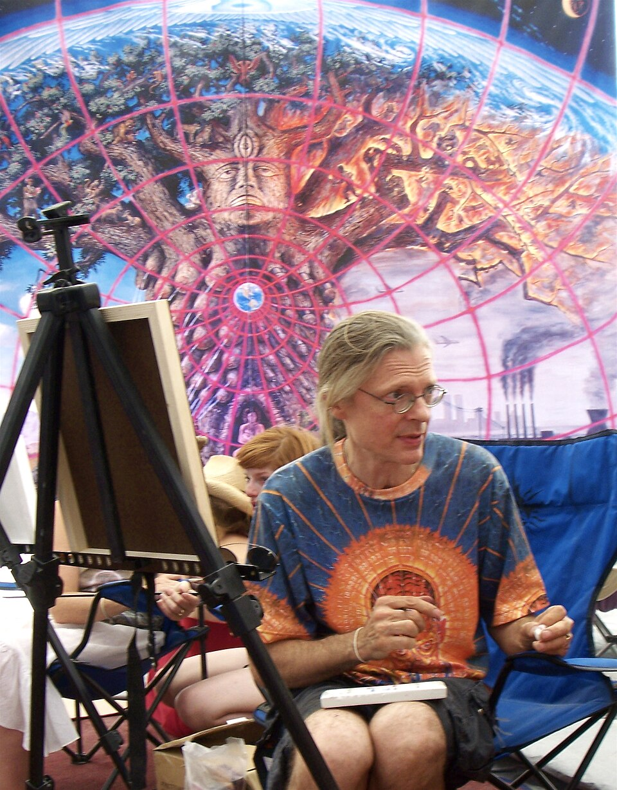

◈ Case File #1990 — Present ◈
TOOL
Sacred Mathematics · Visionary Art · Heavy Metal Mysticism
◈ SACRED ◈
◈
◈
Timeline
Chronological Record ◈ Formation Through Present · 1990–2026 ◈
1990
1990 — Los Angeles, CA
Formation
Maynard James Keenan and Adam Jones meet through a mutual friend in 1989. Drummer Danny Carey, who lived above Keenan, joins after being introduced by Tom Morello — admitting he began playing "because he felt kinda sorry for them." Paul D'Amour completes the founding lineup.[¹]
1991
November 1991
Signed to Zoo Entertainment
After only their seventh live performance — an exceptional pace — Tool sign with Zoo Entertainment as industry interest reaches a fever pitch.[¹]
December 21, 1991
72826 Demo Tape
~1,500 cassettes pressed and distributed locally. Includes early "Sober" and "Hush." The catalog number 72826 spells "SATAN" on a telephone keypad — the first layer of encoded meaning in a career built on them.
1992
March 10, 1992
Opiate EP
Six tracks, ~21 minutes. "Hush," "Part of Me," "Jerk-Off." Sets the template — confrontational lyricism, locked groove heaviness, controlled menace. An aggressive touring campaign begins immediately.
1993
Summer 1993
Lollapalooza — Second Stage to Main
Tool is promoted from the second stage to the main stage mid-festival due to overwhelming crowd draw. The exposure fast-tracks Undertow to gold certification by September.
April 6, 1993
Undertow
Debut full-length on Zoo Entertainment. "Prison Sex," "Sober," "Crawl Away." Revolver calls it "a distinct line in the sand where Tool became a genre unto themselves."[²] Immediate platinum trajectory.
1995
1995
Justin Chancellor Replaces Paul D'Amour
D'Amour departs to pursue guitar. Tool auditions Scott Reeder, Frank Cavanaugh, Eric Avery before selecting Chancellor — a British bassist from Peach who had toured alongside them. His melodic, harmonic-rich style defines every subsequent record.
1996
Fall 1996 — 1998
Ænima Tour + Lollapalooza Headline
Tool debuts "Forty-Six & 2," "Third Eye" live in Pomona. They headline Lollapalooza 1997 (June–Aug) and co-headline Ozzfest 1998 — 41 dates.
September 17, 1996
Ænima
Dedicated to comedian-philosopher Bill Hicks (d. 1994). Debuted #2 on Billboard 200. David Fricke in Rolling Stone: "Noise as purgative."[³] A massive conceptual leap — Jungian psychology, complex structures, California-sinking-into-ocean imagery, Bill Hicks audio on closing track "Third Eye."
2000
December 2000
Salival Box Set
Limited live/rarities release bridging the 5-year gap to Lateralus. Includes an extended "No Quarter" (Led Zeppelin) cover and the studio track "L'Via L'Viaquez." Signals new material is coming.
May 23, 2000
A Perfect Circle — Mer de Noms
Keenan's first side project — co-founded with guitarist Billy Howerdel — debuts #4 on Billboard 200, selling 188,000 copies week one: the highest-charting debut by a rock band at that time. Reassures Tool fans he remained creatively active.
2001
January 15, 2001
"Schism" Single — #1 Mainstream Rock
Reaches #1 on Mainstream Rock. Wins Grammy for Best Metal Performance at the 44th Annual Grammy Awards (Feb 27, 2002) — Tool's first Grammy.
May 15, 2001
Lateralus — #1 Billboard 200
The title track's vocal syllable counts mirror the Fibonacci sequence (1-1-2-3-5-8-13). Chorus time signatures shift through 9/8-8/8-7/8 — forming 987, the 16th Fibonacci number. Kerrang!: "One of the greatest albums you'll hear this lifetime."[⁴] Alex Grey's first Tool collaboration. Debuted #1 Billboard 200.
2002
Summer 2002
Lateralus Tour — Expanded Production
Alex Grey tapestries, giant floating balls, contortionist duo Osseus Labyrint performing live. Tool's philosophy of the concert as immersive multi-sensory ritual fully realized. Danny Carey thanks Satan at the Grammy ceremony with characteristic irreverence.
2003
September 16, 2003
A Perfect Circle — Thirteenth Step
APC's concept album on addiction and recovery debuts #2 Billboard 200, 231,000+ first-week copies. Remains on charts 78 weeks. Keenan's creative ecosystem continues to expand as Tool enters a long studio gap.
2006
April 30, 2006 — December 2007
10,000 Days Tour — 213 Concerts
Opens at Coachella with Isis and Mastodon. Headlines Download Festival (Donington). Tom Morello joins for "Lateralus" at Bonnaroo 2007. 213 shows across two years.
May 2, 2006
10,000 Days — #1 Billboard 200
"Wings for Marie / 10,000 Days (Wings Pt. 2)" — a tribute to Maynard's mother Judith Marie, paralyzed by stroke in 1976, 10,000 days before her 2003 death. 564,000 first-week copies. Grammy for Best Recording Package for Alex Grey / Adam Jones stereoscopic gatefold design.
2007
October 30, 2007
Puscifer — "V" Is for Vagina
Keenan's third creative vessel: electronic, art rock, dark humor. Built in tour buses and hotel rooms. Debuts #25 Billboard 200. A "playground for the various voices in my head where my Id, Ego, and Anima all come together."
2018
April 20, 2018
A Perfect Circle — Eat the Elephant
APC's return after 14 years. Debuts #3 Billboard 200 — their fourth top-four debut. Politically conscious, critically praised. The long inter-album interval mirrors the pattern that had come to define the entire Keenan creative ecosystem.
2019
August 2, 2019
Full Catalog Arrives on Streaming
After years as the most prominent streaming holdout, all Tool albums go live on Spotify, Apple Music, and Tidal. Keenan announces: "Our obsession with, and dream of, a world where BetaMax and Laser Disc rule has ended."
August 30, 2019
Fear Inoculum — #1 Billboard 200
13-year gap. Seven tracks averaging 10+ minutes each. 270,000 album-equivalent units first week — biggest opening for any rock album in over a year, dislodging Taylor Swift's Lover. NME: "perhaps the best collection of vocals Keenan has ever committed to tape."[⁵]
2020
October 30, 2020
Puscifer — Existential Reckoning
Produced amid pandemic. Metacritic score of 80. Cinematic event presentation. Mat Mitchell and Carina Round credited as permanent members for the first time.
March 11, 2020
Fear Inoculum Tour Suspended — COVID-19
Final show: Portland, Oregon. Eugene, OR canceled as lockdowns begin. Tool officially cancels postponed dates — a goodwill gesture — and pledges to open in Eugene when touring resumes. They honor that promise in September 2021.
2022
March 1, 2022
Opiate² — 30th Anniversary Reimagining
Nearly double the original length. Visual artist Dominic Hailstone (Alien: Covenant) collaborates with Adam Jones on a 10+ minute short film. The band's first new video in 15 years. Blu-ray with 46-page art book March 18.
2024
January–February 2024
North American Winter Arena Tour
Runs January 10 (Baltimore) through February 18 (Las Vegas). Justin Chancellor confirms studio organization phase planned. Maynard: "We can't drag this out another 14 years."
2025
2025 — Ongoing
New Album Pre-Production
Three months "organizing our ideas" confirmed. Adam Jones: "The three of us have been jamming... But I think we're going to dive deep soon." No release date announced.
March–April 2025
First South American Dates + Lollapalooza
Debut South American and Caribbean tour: "Tool Live in the Sand." Headlines three Lollapalooza editions — Argentina (Mar 22), Chile (Mar 23), Brazil (Mar 30). Significant geographic expansion at a career stage when peers often contract.
2026
2026 — Current
Active Writing Phase — Sixth Studio Album
When asked about 2026 plans, Maynard replied simply: "Writing, I guess." No touring commitments announced. The pattern is consistent with previous studio-focused periods. Informed observers anticipate the next record arriving before another 13-year wait.
◈
◈
Bios
Personnel Dossiers ◈ Members, Founding Bassist, Visual Collaborator ◈
◈ Lead Vocalist · Tool / APC / Puscifer
Maynard James Keenan
b. April 17, 1964 · Akron, Ohio
Born James Herbert Keenan, he enlisted in the U.S. Army, attended West Point Prep School, then declined an Academy appointment to study art at Kendall College of Art and Design. Arriving in Los Angeles in the late 1980s, he co-founded Tool in 1990. His mother's 1976 aneurysm — which left her paralyzed for 10,000 days — became the emotional engine of his most personal songwriting. He relocated to Jerome, Arizona in 1995, founded Caduceus Cellars and Merkin Vineyards in 2004, and published his memoir A Perfect Union of Contrary Things in 2016. He schedules Tool tours around harvest season.
Side Projects
A Perfect Circle (1999–present) · Puscifer (2003–present) · Caduceus Cellars / Merkin Vineyards (2004) · Film: Blood Into Wine (2010)
"Everything we release with Tool is inspired by our music. It doesn't matter if it is a video or if its lyrics."— Maynard James Keenan, Wikipedia
"This is a prime spot for vineyards. An untapped resource...the New Napa Valley." — on the Arizona winemaking project— Wikipedia, Caduceus Cellars
◈ Lead Guitarist · Video Director · Art Director
Adam Jones
b. January 15, 1965
Before Tool, Jones built a significant career in Hollywood's special effects industry — training at Stan Winston's workshop and contributing to Jurassic Park, Terminator 2, Batman Returns, and Nightmare on Elm Street. He brought stop-motion and sculptural skills directly into Tool's video identity. As art director on 10,000 Days, he collaborated with Alex Grey on a Grammy-winning stereoscopic gatefold. Rolling Stone ranked him the 75th-greatest guitarist of all time. His signature guitar approach uses power chords, chiming arpeggios, off-beat rhythm patterns, and deliberate minimalism — sometimes non-traditional objects as plectrums. Some Fear Inoculum riffs trace back to ideas he wrote in the mid-1990s.
Visual Work
Directed majority of Tool's music videos (stop-motion/clay) · Grammy: Best Recording Package (10,000 Days, 2007) · Introduced Alex Grey to Tool's visual orbit (1999)
"It takes a lot of discipline to think about what the song needs at a given time and really dial it in."— Guitar World, 2019
Jones "employed creative techniques including a 'pipe bomb mic' (a guitar pickup mounted inside a brass cylinder) and used a talk box for the song 'Jambi.'"— Wikipedia, 10,000 Days
◈ Drummer · Sacred Geometry · Polyrhythm Architect
Danny Carey
b. May 10, 1961 · Lawrence, Kansas
Grew up in Lawrence, Kansas building his drumming foundation in jazz before expanding into progressive rock. He studied tabla with master percussionist Aloke Dutta, incorporating Indian classical rhythmic structures alongside Western technique. His approach to complex time signatures is intuitive — he focuses on establishing an "inner pulse" rather than counting bars. Self-directed study in sacred geometry, metaphysics, and occult philosophy informs how he builds rhythmic patterns: his drum kit geometry is arranged according to sacred geometry principles. Rolling Stone ranked him the 26th-greatest drummer of all time. On Lateralus, he sampled himself breathing through a tube to simulate Buddhist monk chanting on "Parabol."
Side Projects
Volto! (jazz fusion) · Pigmy Love Circus · Legend of the Seagullmen · Beat
"Every number has its strike on the subconscious in one way or another. The more you can make yourself sensitive to these things, the more it can open you up to other forces that may want to be heard."— Revolver, 2019
Carey channels "the drum gods Tony Williams, John Bonham and his friend Neil Peart," reflecting his respect for jazz, rock, and progressive traditions.— Wikipedia, Danny Carey
◈ Bassist · Tool (1995–Present)
Justin Chancellor
b. November 19, 1971 · London, England
Born in London of English and Norwegian descent, Chancellor studied at Durham University before music prevailed. He played bass in British band Peach, which supported Tool on a 1994 European tour — leading directly to his recruitment when Paul D'Amour departed in 1995. He relocated to the U.S. in time to record Ænima (1996). Known primarily for his work with Wal bass guitars — particularly a MKII 4-string acquired during Ænima sessions — and for using the DigiTech Bass Whammy to create harmonic overtone layers that blur the boundary between bass and texture. He co-owned the Topanga, California bookstore Lobal Orning (closed 2008) and has collaborated with Death Grips, Primus, and Author & Punisher.
Collaborations
Death Grips · Primus · Author & Punisher · Lobal Orning bookstore, Topanga CA (2000s)
"Chancellor is primarily known for his work with Wal bass guitars, particularly a MKII 4-string model he acquired during Ænima's recording."— Wikipedia, Justin Chancellor
"One guitar riff in '7empest' traced back to ideas Jones wrote decades earlier" — illustrating the deep collaborative archaeology of Tool's compositional process.— Wikipedia, Fear Inoculum
◈ Original Bassist · Tool (1990–1995)
Paul D'Amour
b. 1968/1969 · Spokane, Washington
Paul D'Amour co-founded Tool despite being primarily a guitarist — a tension that ultimately shaped his departure. His aggressive picked bass tone on a Chris Squire Signature Rickenbacker defined the sonic character of Opiate (1992) and Undertow (1993). He is credited as co-writer on all Undertow tracks except "Bottom" (co-written with Henry Rollins). According to Danny Carey, he left because he "wanted to play guitar rather than bass." D'Amour later formed Lusk, the Replicants, Feersum Ennjin, and Lesser Key before joining Ministry as bassist in 2019, appearing on Moral Hygiene (2021) and Hopiumforthemasses (2024).
Post-Tool Projects
Lusk (psychedelic pop, Free Mars, 1995) · Replicants (covers) · Feersum Ennjin (2005–2011) · Lesser Key (2013–present) · Ministry (bassist, 2019–present)
"D'Amour left the band because he wanted to play guitar rather than bass." — Danny Carey— Wikipedia, Paul D'Amour
"I always wanted to do other things, and it felt like I was too much in a box with that band."— Paul D'Amour, Wikipedia
◈ Visionary Painter · Visual Collaborator (1999–Present)
Alex Grey
b. November 29, 1953 · Columbus, Ohio
Alex Grey's paintings map the physical, psychic, and spiritual anatomy of the human form — rendering the body in transparent layers that reveal muscle, skeleton, nervous system, and luminous energy fields simultaneously. A spiritual experience in 1975 became the core of his artistic mission. Adam Jones discovered Grey's work at a 1999 Santa Monica exhibition and approached about album art; Grey has since created artwork for three consecutive Tool studio albums — Lateralus (2001), 10,000 Days (2006), and Fear Inoculum (2019). The 10,000 Days stereoscopic packaging (designed with Jones) won the Grammy for Best Recording Package. His 15-foot painting Net of Being — inspired by an ayahuasca journey — became one of the most iconic images of the Fear Inoculum era. He co-founded the Chapel of Sacred Mirrors (CoSM) in 1996, a 40-acre gallery complex in Wappinger, NY.
Key Works
Album art: Lateralus · 10,000 Days · Fear Inoculum · Chapel of Sacred Mirrors (CoSM), Wappinger NY · Books: Sacred Mirrors, The Mission of Art, Net of Being
"A vision of sacred interconnectedness was the most important subject of art."— Alex Grey, alexgrey.com
"A blazing vision of an infinite grid of Godheads during an ayahuasca journey." — on the 10,000 Days cover concept— Alex Grey, alexgrey.com
◈
◈
Fact or Fiction
Myth-Busting Dossier ◈ 11 Claims · Examined · Verified Against Sources ◈
◈ HEADLINE MYTH ◈
MYTH 01
"Tool encoded the entire Fibonacci sequence into the syllable counts of Lateralus. Every line, every verse follows the golden ratio. The whole song was mathematically constructed from start to finish."
What's actually true: The Fibonacci encoding is real but limited to specific, deliberate passages — not the entire song. The opening verse syllable counts follow 1-1-2-3-5-8-5-3, ascending then descending. The chorus time signatures shift through 9/8-8/8-7/8 — forming 987, the 16th Fibonacci number (confirmed by Danny Carey). These elements are genuine and intentional. However, Maynard himself told Joe Rogan in 2017 that incorporating explicit Fibonacci numbers was "kind of a dick joke" and "a very pedestrian, sophomoric move" — because music already inherently embodies the phi ratio, making explicit numerical additions somewhat redundant. The vocal entry timing fan-calculation (1:37 ≈ phi) is retrofitting: 1:37 equals 1.6166, not exactly 1.618.
Why the myth formed: Fan forums in the early 2000s amplified the syllable-count discovery and extrapolated it across the whole album. The genuine embedded elements were real enough to make the extended myth feel plausible. Confirmation bias did the rest: once fans expected Fibonacci everywhere, they found it everywhere.
MYTH 02
UNDETERMINED
"The Holy Gift: Lateralus has a secret true track order hidden by the band."
The Holy Gift is a fan-created reordering of Lateralus's 13 tracks using Fibonacci pairing: [6,7] [5,8] [4,9] [13] [1,12] [2,11] [3,10] — placing "Lateralus" at center. The resulting listen does produce strikingly smooth transitions. But Tool has never confirmed, denied, or acknowledged this theory in any official capacity. Kerrang! notes: "only those responsible for its creation will know if there's any substance to The Holy Gift."
The genuine Fibonacci encoding in the title track created an atmosphere where fans expected hidden layers everywhere. Tool's reputation for mystery made fans unwilling to dismiss any theory, since a denial from Maynard could itself be part of the game.
Sources: Kerrang! — Holy Gift · Tone Deaf — "Tool's secret mind-blowing album"
MYTH 03
FICTION
"Tool operates like a cult. Maynard controls followers through coded messages and deliberate mystification."
Tool has never recruited members, demanded behavioral compliance, or exerted control mechanisms associated with actual cultic organizations. Maynard explicitly criticized cult dynamics in a 2026 Louder interview: "If you're trying to have followers and make them think like you do, you're just building a cult." Tool's genuine philosophical influences — Jungian archetypes, Gurdjieff, sacred geometry, Joseph Campbell — are difficult, non-hierarchical frameworks. The opposite of doctrine.
The band's visual opacity + Alex Grey's anatomical art + Carey's documented interest in ceremonial magic created irresistible surface for conspiracy layering. Fans who found the music genuinely transformative projected controlling intent onto the band.
Sources: Louder Sound — Puscifer interview 2026 · Loudwire — "How Did Tool Become a Cult?"
MYTH 04
FICTION
"Stinkfist is literally about fisting. The whole song is shock-value provocation dressed up in pretentious language."
Maynard has explicitly stated the song's subject is desensitization — the human psychological need to push further into intensity as the capacity for feeling becomes numbed. The imagery is metaphor for escalation, not subject matter. During the Ænima tour he repeatedly introduced it live as being "about choosing compassion over fear." MTV aired the video as "Track #1" rather than by its title, and VJs performed knowing gestures on-air — amplifying the misread at industrial scale.
The title was designed to provoke exactly this misread — Tool has always used deliberate discomfort as an entry point. The censorship response made the sexual reading so thorough that the metaphorical layer became invisible to casual listeners.
Sources: Wikipedia — "Stinkfist" · Songfacts — "Stinkfist by Tool"
MYTH 05
PARTIAL
"Maynard hates his fans. Turning his back to the audience shows contempt."
The back-of-stage position is a documented practical decision, not contempt. Maynard explained in a 2024 Kerrang! cover story: "With Tool, Danny's drums are so loud, he has like 17 arms and 15 legs, and then you've got Adam's row of amps and Justin's wall of bass. It just makes it way harder for the front-of-house to have a mix if [I'm] down front." He also watches the band from there — impossible if he faced the audience. The elevated rear position, not a turned back. On "hates fans": he did call fanatics who demanded a new album and dismissed Puscifer "insufferable" — later clarified in Billboard: "Our core fanbase aren't fanatics. They're music lovers, artists and good people."
Tool's darkness-and-video concert aesthetic (near-total darkness, video as visual focus) created optics of a frontman hiding. The combative interview persona and the real "insufferable" comment gave the contempt narrative just enough factual scaffolding to feel credible.
Sources: The PRP — Maynard explains stage position · Billboard — "Maynard Clarifies Calling Fans Insufferable"
MYTH 06
FICTION
"Danny Carey has a PhD in sacred geometry / advanced mathematics."
Carey attended the University of Missouri-Kansas City where he studied percussion — not mathematics or sacred geometry. Wikipedia's biographical record confirms no undergraduate degree was completed, let alone a PhD. Sacred geometry is not an accredited academic discipline with doctoral programs. Carey is genuinely self-educated in these areas — his drum kit geometry is arranged according to sacred geometry principles and he's spoken at length in interviews about Fibonacci-derived time signatures and occult mathematics as compositional tools. The sophistication of his application is real. The credentialing around it is invented.
When an artist demonstrates unusual depth in an esoteric field, admirers retrofit formal credentials to explain the sophistication. Tool's wider reputation for academic seriousness made the PhD story feel plausible without verification.
Sources: Wikipedia — Danny Carey · Revolver — Danny Carey on Sacred Geometry
MYTH 07
FICTION
"Alex Grey designed Tool's visual identity from day one — Undertow, Ænima, all of it."
Alex Grey's collaboration with Tool began in 1999 — eight years after the band formed and three albums in. Grey's first Tool work was Lateralus (2001). Opiate, Undertow, and Ænima all predate his involvement entirely. Adam Jones attended a Grey solo exhibition in Santa Monica in 1999 and "inquired with the gallery about my artwork and started talking immediately about album art." Grey has since created artwork for three consecutive studio albums. His influence on the band's visual identity since 2001 is total — but that's the second half of their studio output, not the origin.
Grey's visual signature is so completely fused with the Tool aesthetic that backward projection is inevitable. Listeners who discovered Tool through Lateralus assume earlier albums share the same visual DNA. The Ænima cover bears some surface resemblance to Grey's style, reinforcing the misattribution.
Sources: Alex Grey official site · Revolver — "Visionary Art, Psychedelics, Tool: The Mystical Life of Alex and Allyson Grey"
MYTH 08
PARTIAL
"Fear Inoculum was delayed 13 years by a record label lawsuit."
The 13-year gap had multiple causes, and the label lawsuit was only one — not even the primary legal obstacle. The more decisive blockage: an insurance company Tool believed would defend them against an artwork credit lawsuit instead sued Tool itself. Tool countersued. The case dragged on eight years before a judge ruled in Tool's favor in March 2015. Beyond litigation, the band spent five-six years touring after 10,000 Days before even beginning to write, and Maynard acknowledged that fear of not matching their own standard was "detrimentally crippling." The album then required a solid five years of active recording.
"The label blocked them" is a satisfying, compact villain narrative. The insurance company dispute is far less cinematic. Fan shorthand collapsed a multi-layered legal-creative situation into the simplest possible frame.
Sources: Kerrang! — "Lucky 13: The Real Story" · Global News — Alan Cross on why it took so long
MYTH 09
PARTIAL
"Maynard's mother was paralyzed her whole life. The title is how long she was paralyzed from birth."
Judith Marie Keenan suffered a debilitating stroke in 1976 when Maynard was 11 — not from birth. The stroke left her paralyzed and unable to read, write, speak, walk, or tell time. She died in June 2003. The 10,000 days figure represents approximately 27 years — the span between her stroke and her death. The album (2006) was released three years after her passing. A significant undercurrent in both songs is Maynard wrestling with whether her devout Catholic faith justified her suffering and constituted a kind of lived spiritual accomplishment.
"10,000 days" sounds like a lifetime count. Fans unfamiliar with the biographical details assumed it measured Judith's entire life rather than her years of paralysis. The songs' apocalyptic grandeur made the personal backstory feel more mythological than biographical.
Sources: Blair Stegman Blog · Louder Sound — "The Story Behind the Song: 10,000 Days"
MYTH 10
FICTION
"Tool's music is engineered at 432Hz to trigger DMT release from the pineal gland. This has been scientifically studied."
No peer-reviewed study has linked Tool's music to DMT production or pineal gland activity. Tool tunes to standard A440 — not 432Hz. The "432Hz healing frequency" claim exhibits "hallmarks of pseudoscience" that "typically cite numerology rather than testable mechanisms." Psychopharmacologist David E. Nichols published in Psychopharmacology that there is "no good evidence" supporting the pineal gland as a DMT source for altered states — the gland would need to produce ~25mg of DMT rapidly, which researchers describe as "simply impossible." The subjective experience of Tool's music as consciousness-expanding is real and widely reported. The proposed biochemical mechanism is fabricated.
Tool's music genuinely produces intense, altered-feeling experiences. Fans sought a scientific explanation and landed on existing 432Hz/pineal/DMT mythology circulating in wellness communities. Tool's documented interest in sacred geometry and psychedelic-adjacent spirituality made the attribution feel coherent.
Sources: PsyPost — pineal gland DMT research · This Week in Science News — 432Hz analysis
MYTH 11
PARTIAL
"Maynard fled California because he hates the music industry. Arizona was his escape."
The move to Jerome, Arizona in 1995 was real and permanent — but the motivation was more personal and spiritual than simple industry rejection. Keenan has described a literal dream in 1993 in which he flew above a small desert mountain town he later identified as Jerome when a friend drove him there. He described arriving and "vibrating." He has also been explicit about his distaste for Los Angeles: "this L.A. sycophant nightmare of vampires." Both accounts are simultaneously true. Once in Arizona, he invested deeply in the community — founding vineyards, creating a viticulture college program, scheduling tours around harvest. Arizona was never a retreat from engagement but a different kind of engagement entirely.
Maynard's combative public persona around the industry made "he fled the industry" feel like the coherent explanation for a geographic choice that had spiritual, personal, and agricultural dimensions the narrative erases.
Sources: Phoenix New Times — "Maynard James Keenan: Why Arizona?" · Wine Enthusiast — Keenan Arizona wine feature
◈
◈
Gallery
Visual Archive ◈ CC-Licensed Photos · Album Art · Alex Grey Paintings ◈
◈ Album Covers

Undertow — 1993

Ænima — 1996

Lateralus — 2001

10,000 Days — 2006

Fear Inoculum — 2019
◈ Concert Photography · CC-Licensed

Tool live — Katowice, 2006

Tool live — Barcelona, 2006

Tool live — Mannheim, 2006

Adam Jones — guitarist
◈ Alex Grey — Visionary Paintings & Portraits

Alex Grey — Visionary Work I

Alex Grey — Visionary Work II

Alex Grey — Visionary Work III

Alex Grey — Portrait, 2013

Alex Grey — at CoSM